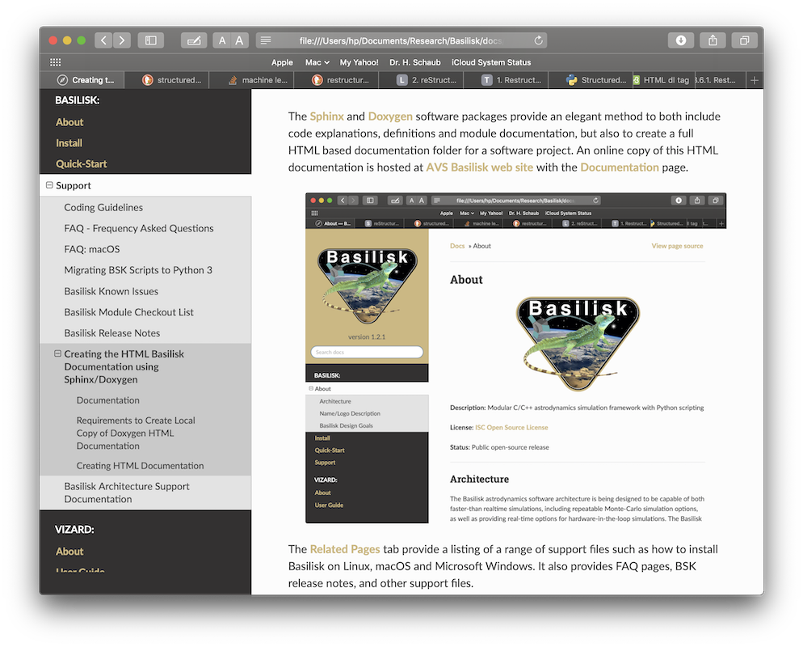

Creating the HTML Basilisk Documentation using Sphinx/Doxygen
Documentation Description
The Sphinx and Doxygen software packages provide an elegant method to both include code explanations, definitions and module documentation, but also to create a full HTML based documentation folder for a software project. An online copy of this HTML documentation is hosted at AVS Basilisk web site with the Documentation page.

Tool Requirements
You need to have command line versions of Doxygen and Graphviz installed on
your system. The Doxygen download page
contains a range of pre-compiled binaries for many different platforms.
Graphviz provides the dot executable used by Sphinx to render module I/O
diagrams.
On macOS the Homebrew tool is also a very convenient method to install these tools by typing in the terminal:
brew install doxygen graphviz
On Ubuntu or Debian Linux systems these tools can be installed with:
sudo apt install doxygen graphviz
If you are using a conda environment, Graphviz can also be installed with:
conda install conda-forge::graphviz
You can verify that Graphviz is available with:
dot -V
To install the required python packages run the command:
pip install -r requirements_doc.txt
Making the HTML Documentation Folder
First generate the test plots:
cd src
pytest -n auto
Return to the repository root and generate the reduced dynamics-comparison
figures used by their documentation pages. This step requires a Basilisk build
configured with --mujoco True:
cd ..
python examples/dynamicsComparison/runAllComparisons.py --documentation-figures
Next, in a terminal window switch to the docs folder:
cd docs
Finally, type the following command to build the HTML documentation:
make html
The final HTML documentation folder is stored in docs/build/html.
After the first build, later make html invocations preserve generated API
source files whose contents have not changed. This allows Sphinx to reuse its
saved environment and rebuild only outdated pages. Removed or renamed modules
are still pruned from the generated documentation tree. Use make clean
when a deliberately fresh build is required.
Doxygen XML is cached separately for each C/C++ module in the selected build
directory, beside the HTML output (by default, docs/build/doxygen-cache).
A module is processed again only when its input
files, transitively included local files, Doxygen configuration, or Doxygen
version changes. Headers resolved from the including file’s directory or the
Sphinx configuration directory (docs/source) are tracked transitively,
including additions and removals. Includes in inactive conditional branches
are also tracked conservatively, including headers when SEARCH_INCLUDES=NO.
The updated XML is synchronized by content so API pages are not rebuilt when
Doxygen produces identical output.
make html continues to use serial Sphinx processing by default. On macOS
and Linux, parallel Sphinx processing can be requested explicitly with
make html SPHINXOPTS="-j 2". XML dependencies recorded by each worker are
merged so later header edits refresh every affected API page. Doxygen projects
are still generated sequentially. The first build after this dependency-tracking
fix rereads the Sphinx pages once to replace older saved environments; valid
Doxygen XML caches remain reusable.
Sphinx command-line overrides for breathe_doxygen_config_options and
breathe_doxygen_aliases are applied before XML generation and cache lookup.
Configuration options retain their mapping insertion order: put @INCLUDE_PATH
before @INCLUDE, and place overrides before or after an included configuration
according to the intended precedence.
Doxygen runs from the Sphinx configuration directory (docs/source), so
relative paths in settings such as INCLUDE_PATH, TAGFILES, and
INPUT_FILTER are resolved from that directory. The cache extension controls
OUTPUT_DIRECTORY and XML_OUTPUT to keep generated XML in its staging
directory, regardless of overrides for these two settings.
Projects using computed include filenames or external dependency settings
(such as INCLUDE_PATH, input filters, TAGFILES, or bibliography inputs
in CITE_BIB_FILES) are regenerated on each build because their dependencies
cannot be safely resolved by the local include scanner.
Configuration containing environment-variable references such
as $(VARIABLE), including references in aliases, also bypasses XML cache
reuse so Doxygen evaluates the current environment on every build. File-inclusion
documentation commands such as @include{doc} and @snippet, whether present
in source text or alias definitions, also bypass reuse, even with
ENABLE_PREPROCESSING=NO. Detection is conservative, so literal examples of
these commands can also trigger regeneration. If publishing
updated XML is interrupted, the next build regenerates that project’s cache,
even if the source changes have been reverted.
Documentation integration tests require Doxygen, Sphinx, and Breathe. Parallel
read tests require a POSIX system; the alternate-build cleanup test also requires
POSIX make.
After installing the documentation requirements, run these tests from the
repository root with:
pytest src/tests/test_doxygen_cache.py -m docsIntegration
These tests also carry ciSkip so normal platform CI does not require the
documentation tools. The docs job explicitly selects docsIntegration and
rejects skipped tests. Dependency-free cache and synchronization tests remain
in the normal platform test suite.
The dynamics-engine comparison runtime tables are optional local benchmarks
and are not generated by make html. To measure them with a clean,
MuJoCo-enabled Release build, run:
make comparison-runtime-tables
On Windows, run make.bat comparison-runtime-tables instead.
The command writes CSV tables under
examples/dynamicsComparison/results. Absolute times depend on the host and
should not be treated as documentation-build results.
To open the HTML index file and view the documentation in the browser use:
make view
To clean out the sphinx generated documents and folder use:
make clean
On Windows, use make.bat clean instead. Both commands remove the generated
HTML, Sphinx environment, Doxygen XML cache, generated API source trees, and
breathe.data. The next documentation build is a fully clean build.
If you override BUILDDIR with the Makefile, use the same value when cleaning:
make html BUILDDIR=build-preview
make clean BUILDDIR=build-preview
The XML cache then lives in build-preview/doxygen-cache and is removed with
that build. Other build directories are left untouched.
Including Generated Rust Module APIs
Rust module pages can include the C-compatible configuration interface generated from their Rust source. Configure and build Basilisk with Rust module support before running Sphinx:
python conanfile.py --rustModules True
cd docs
make html
Sphinx looks for the generated headers in dist3/rust/include and sends
each available module header through the existing Doxygen/Breathe pipeline.
The generated API sections are omitted when a Rust module header is unavailable, so Rust remains optional for normal documentation builds.
If Basilisk was built in a non-default directory, set
BSK_RUST_HEADER_DIR to that build’s rust/include directory before
running Sphinx.
Rendering a Single Documentation Page
To quickly preview one documentation page while editing it, run make with
the page path from the docs folder. For example, to render the release guide
page use:
make source/Support/Developer/bskKnownIssues.rst
This builds only the requested source page into docs/build/html and avoids
regenerating the auto-created module documentation source files. This mode is
intended for local editing previews; cross-page links and navigation can be
incomplete because Sphinx does not read the full documentation tree.